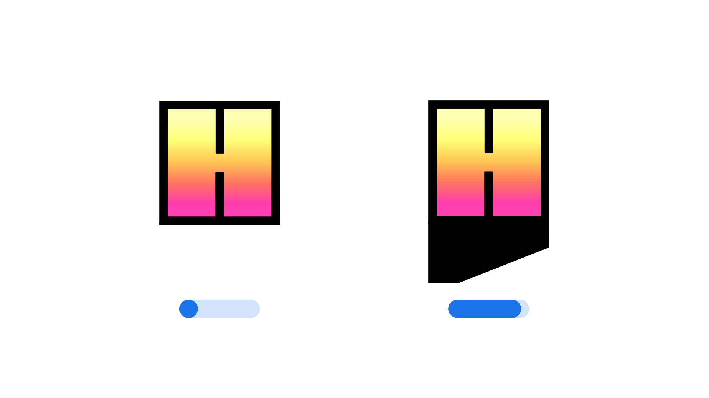

Shadow Length (SHLN)
By Google Fonts Knowledge contributors · Google Fonts Knowledge.
Original article · Source on GitHub · CC BY-SA 4.0. Text, illustrations and existing credits reproduced from the licensed Knowledge repository. Open Shelf adapted the layout and links; these adaptations are also CC BY-SA 4.0. No endorsement implied.
"Shadow Length" (SHLN in CSS) is an axis found in some variable fonts that controls the length of a shadow applied to letterforms, allowing one to add depth and dimension to a typeface.
The Google Fonts CSS v2 API defines the axis as:
| Default: | Min: | Max: | Step: |
|---|---|---|---|
| 50 | 0 | 100 | 1 |

A letterform from the Honk typeface.
Changes along the Shadow Length axis increase or decrease the shadow applied to each letterform. At 0%, the shadow length is zero, while at 100% the shadow reaches the maximum length defined by the typeface’s design. The default value of 50% places the shadow midway between these extremes.
The axis uses a percentage-based scale relative to each family’s design, where 0% produces no shadow and 100% applies the maximum shadow length intended by the type designer.